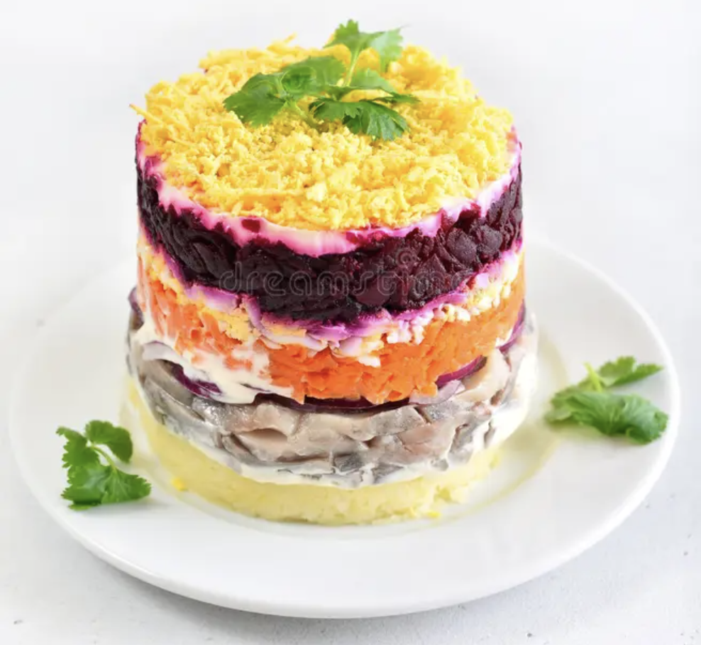

Shuba Recipe
Back to Recipes
Image

Description
Shuba, also known as "herring under a fur coat," is a traditional Russian and Ukrainian layered salad. It consists of layers of finely diced pickled herring, onions, boiled potatoes, carrots, and beets, all bound together with mayonnaise. The final layer of vibrant beets and mayonnaise gives the dish its "fur coat" name. It is chilled for several hours before serving to allow the flavors to meld.
Ingredients
- Pickled herring fillets, packed in oil
- Beets
- Potatoes
- Carrots
- Yellow or red onion
- Hard-boiled eggs
- Mayonnaise
- Fresh dill or parsley, for garnish
- Salt and black pepper, to taste
- Optional: Fresh dill, for garnish
Steps
- Prepare the vegetables and eggs. Boil the potatoes, carrots, and beets in separate pots until tender. Boil the eggs until they are hard-boiled. Let everything cool completely, then peel the vegetables and eggs.
- Dice and grate the ingredients. Finely chop the pickled herring fillets and the onion. Grate the cooled potatoes, carrots, beets, and hard-boiled eggs into separate bowls.
- Assemble the layers. On a serving dish or in a ring mold, create the layers in the following order:
- Layer 1: The chopped herring and onion mixture, spread evenly on the bottom.
- Layer 2: A thin layer of mayonnaise spread over the herring and onion.
- Layer 3: The grated potatoes, seasoned with a little salt and pepper.
- Layer 4: Another thin layer of mayonnaise.
- Layer 5: The grated carrots.
- Layer 6: Another layer of mayonnaise.
- Layer 7: The grated eggs.
- Layer 8: Another light layer of mayonnaise.
- Layer 9: The grated beets, covering the entire surface to form the "fur coat".
- Chill the salad. Cover the assembled salad with plastic wrap and refrigerate for at least 4 to 6 hours, or ideally overnight. This allows the flavors to meld and the salad to set.
- Garnish and serve. Before serving, carefully remove the ring mold if using. Decorate the top with chopped dill or other garnishes as desired. Serve chilled.